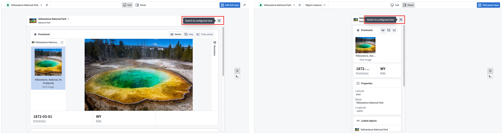
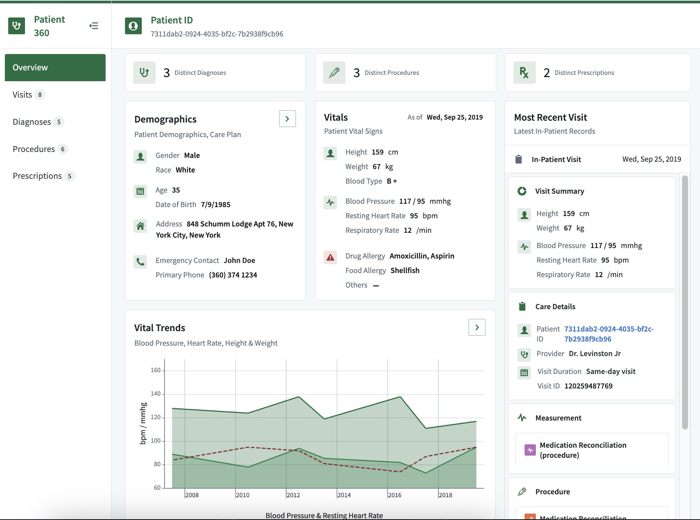
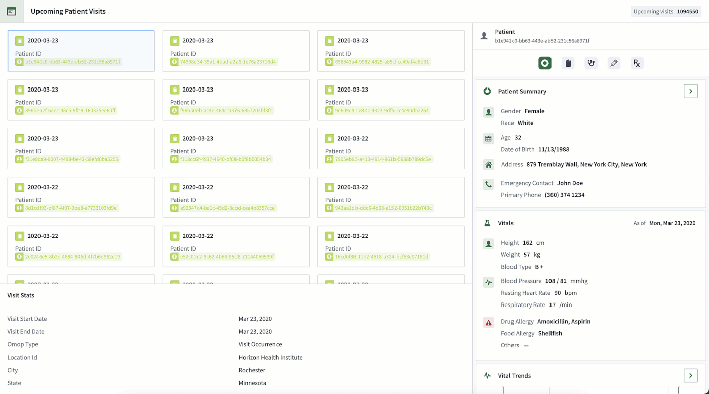

Object Views
Object Views are reusable representations of object data. They provide a central hub for all information related to an object and include key information about the object, including property data, object links, and related applications.
Standard and configured Object Views
There are two types of object views:
- Standard Object Views: Standardized, out-of-the-box representations that automatically reflect an object type's configuration. Standard Object Views are available for all object types and provide a consistent way to view object data without any configuration. Learn more about standard Object Views.
- Configured Object Views: Fully customizable representations built using Workshop that you can configure to provide contextualized experiences for specific workflows. When a configured Object View is created, it becomes the default view, though users can always switch back to the standard Object View.
Standard Object Views exist alongside configured Object Views as a first-class viewing option. While standard Object Views display by default when no configured Object View is created, they remain accessible even after a configured Object View is built. Users can toggle between standard and configured Object Views at any time based on their needs.

Object View form factors
Both standard and configured Object Views are available in two form factors to accommodate different levels of detail. These different form factors offer flexibility in how object data appears across different workflows.
- Full Object Views: A comprehensive overview of an object, representing an in-depth display of all related information.
- Panel Object Views: Intended for integration with other applications and should focus on displaying the most critical data for a specific workflow.
Example: Configured Patient Object View
A configured full Object View for a Patient object might include:
- Core demographics, vitals, and care details: A comprehensive snapshot of the patient's basic information, health status, and ongoing care plans.
- Linked procedures, prescriptions, and diagnoses: A consolidated list of medical interventions, medications prescribed, and confirmed diagnoses, providing a holistic view of the patient's medical history.
- Analytical trends from historical in-patient records: Insights derived from past hospital stays, highlighting patterns and trends in the patient's health over time.
This configured full Object View could serve as an exhaustive resource for all relevant information about a patient, facilitating better-informed healthcare decisions and personalized care planning.

The configured panel Object View for the same Patient object may only show the demographic and vital information, so when it appears in other applications it provides users with easy access to the most critical data for their workflow.

Learn more about object types and the concepts behind Ontology-based data modeling.